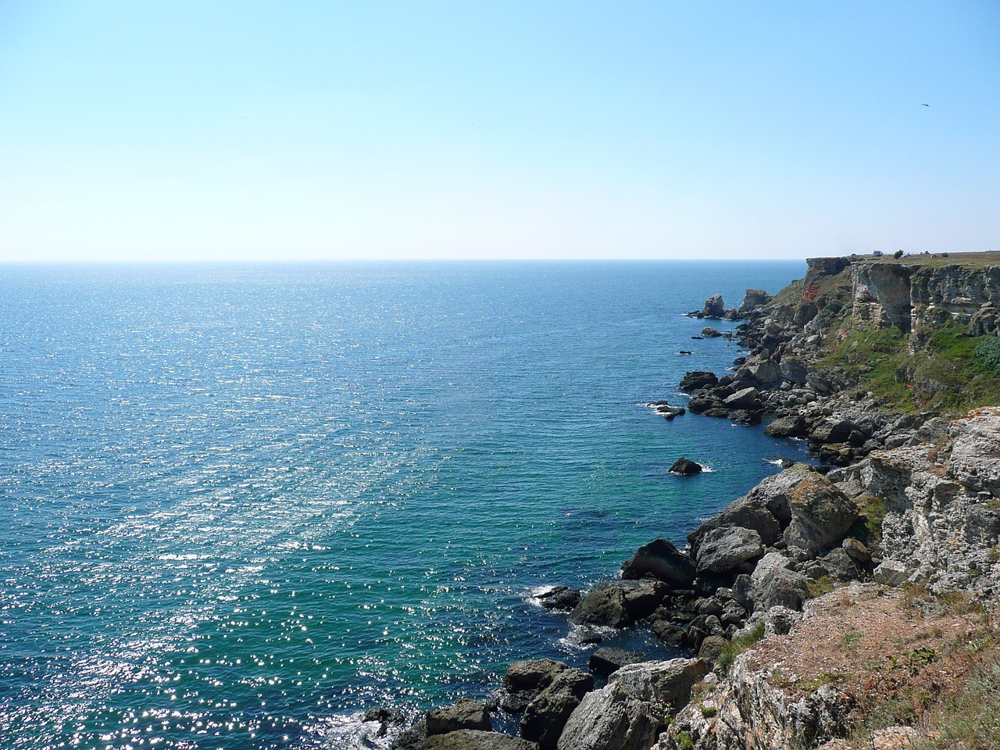
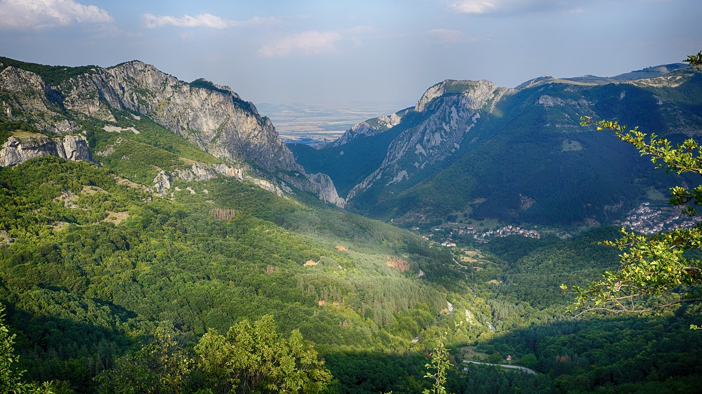
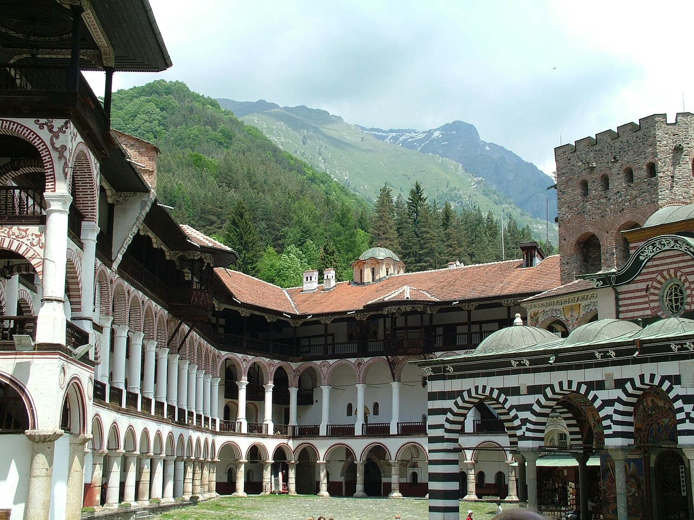

Where is Bulgaria ?
Bulgaria occupies a portion of the eastern Balkan peninsula, bordering five countries—Greece and Turkey to the south, Macedonia and Serbia to the west, and Romania to the north. The most notable topographical features are the Danubian Plain, the Balkan Mountains, the Thracian Plain, and the Rhodope Mountain.
-

The Black Sea
Long, sandy beaches and fine weather reel holidaymakers into Bulgaria’s Black Sea resorts each summer. Bulgarian inlanders are helplessly drawn to the freshening sea breeze and miles of turquoise water. Foreign visitors, too, are wise to Bulgaria’s coast, thanks to gorgeous seaside resorts such as Primorsko (and prices that compete well with Western Europe). Even the coast's two big cities, Varna and Burgas, have attractive beaches within minutes of their urban hearts. And while Sunny Beach, Sozopol and other favourites are thoroughly developed, there are still plenty of undiscovered coves north and south of the major hubs
-

Mountains and Forests
Bulgaria’s untamed landscapes quicken the pulse of hikers, mountain bikers and skiers. Seven mountain ranges ripple across the country; glacial lakes sparkle between these snow-dusted peaks, and tangles of forest conceal wolves, bears and lynx, a glimpse of Europe’s primeval past. Networks of trails and hizhas (hiking huts) allow access to such raw beauty as mist-cloaked panoramas in the Stara Planina range and sunrise from Bulgaria’s second-highest peak, Mt Vihren (2915m). Between trekking among Rodopi villages, thundering across ski fields in Bansko or birdwatching in Pirin National Park, Bulgaria has much to delight (and exhaust) lovers of the great outdoors.
-

Churches and Religious Art
No visitor to Bulgaria can fail to be impressed by its religious art, from vast gold-domed churches to miniature icon paintings. Sofia’s Aleksander Nevski Church and 10th-century Rila Monastery draw visitors and pilgrims galore, while Tryavna’s wood carvings and Bachkovo’s apocalyptic murals are gathering fame. But Orthodox churches in even the tiniest villages have much to admire: emotive paintings of saints, often set in carved wooden screens (iconostases), appear magical when bathed in flickering candlelight. Almost as spectacular are the settings of many sacred buildings: granite cliffs, thrashing streams and lonely mountain passes.
Culture
Contemporary Bulgarian culture blends a formal culture that helped forge a national consciousness towards the end of Ottoman rule, and millenium-old folk traditions. An essential element of Bulgarian folklore is fire, used to banish evil spirits and illnesses. Many of these are personified as witches, whereas other creatures like zmey and samodiva (veela) are either benevolent guardians or ambivalent tricksters. Some rituals against evil spirits have survived and are still practised, most notably the kukeri and survakari. Martenitsa is also widely celebrated. Nestinarstvo, a ritual fire-dance of Thracian origin, is included in the list of UNESCO Intangible Cultural Heritage.
Chronological Facts
- 681-1018 First Bulgarian Empire
- 864 Conversion to Christianity under Knyaz Boris I
- 1185-1396 Second Bulgarian Empire
- 3/3/1878 Principality of Bulgaria
- 10/5/1908 Declaration of Independence from the Ottoman Empire
Ancient History
Whispers of history emanate from Bulgaria’s fortresses and ruins. Caves secreted in Bulgaria’s river-sculpted wilds hold traces of Neolithic settlements. The mysterious Thracians left behind dazzling hauls of gold and silver, and tombs that can be explored to this day. The Romans built cities of breathtaking scale, the bathhouses, walls and amphitheatres of which sit nonchalantly in the midst of modern cities such as Varna and Plovdiv. Successions of tsars strutted along the ramparts of Tsarevets Fortress at former capital Veliko Târnovo. And these histories are no less relevant today, with Thracian art and Bulgaria’s victory over the Ottomans continuing to inspire.